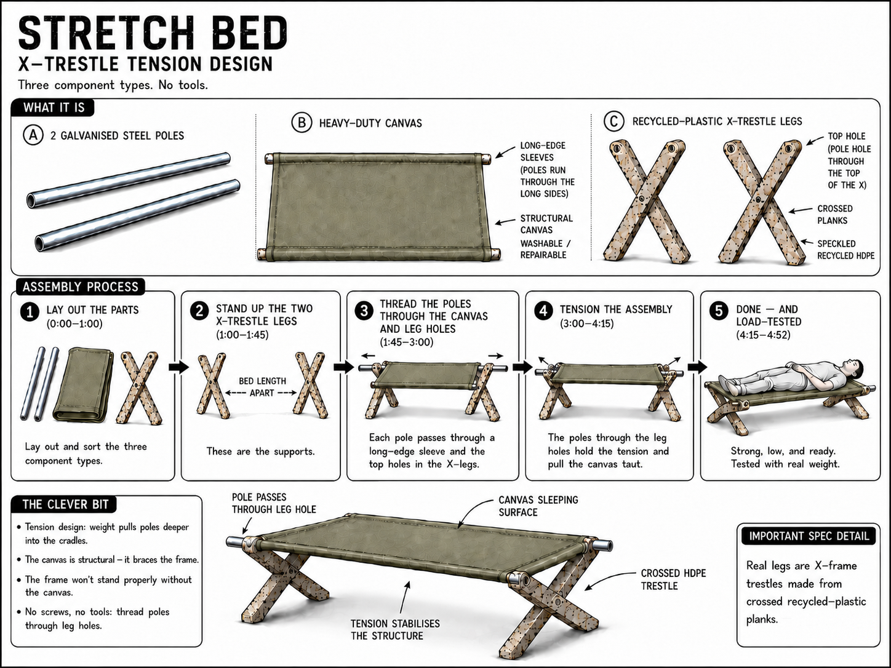
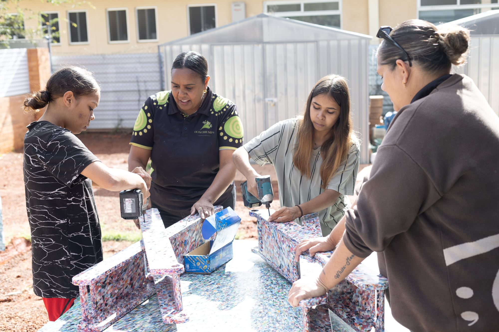

Goods on Country
The goal was never a bigger Goods. It is a plant that belongs to the people sleeping on the beds.
Communities choose what they need. We supply proven products and production capability, and then we hand the making over.
YARN → SHAPE → RESOURCE → DELIVER → TRANSFER → GROW
Goods on Country
nobody funds Goods forever
Ninga Mia, Kalgoorlie · where it started
The first bed disappeared overnight.
We built the first Basket Bed with Gloria and her relatives at Ninga Mia, then left it outside the tent on a windy, rainy night. We were nervous. When we came back the bed was gone.
The family had carried it inside. Our field record shows three people on the mattress; the ladies remember all six sharing it. They asked straight away for another double and a single. Later the bed failed, was repaired with rope, and the feedback changed the design.
The first Basket Bed entered the tent as a prototype. It came out as an obligation.
Goods on Country
observed field record · Basket Bed (legacy)
The default
The hardware kept arriving. The question never did.
Remote homes are sold fragile, expensive goods that were designed for a suburb and cannot be repaired locally. One Alice Springs provider's estimate: about $3M of washing machines sold into nearby communities each year, most in a dump within months. Sleeping on the floor is where scabies starts, and scabies is the road toward rheumatic heart disease. That is the why. We do not claim the cure.
“Go and talk to the elders first.”
Dianne Stokes, Warumungu Elder, Tennant Creek
So the first stage of every pathway is a yarn, and the community sets the agenda. Not a product catalogue.
Goods on Country
FRRR 2022 survey · $3M is a provider estimate, not audited
What they chose
The Stretch Bed

26 kg
one person carries it
Two crossed recycled-plastic legs, two steel poles, washable canvas. Tension the poles and the canvas braces the frame. Designed in community: the height, the washing, the repair and the transport all came back as feedback and changed it.
“Good for me and comfy, easy to put together.” · Dorrie Jones, Arlparra
Goods on Country
Proof
Already shipped, and every one is trackable.
540
beds deployed V
177 Stretch + 363 Basket
22
washing machines V
Pakkimjalki Kari
3,540
kg plastic diverted M
177 Stretch × 20kg. Basket counts zero.
$713,827
Goods revenue, FY26 YTD V
accountant-signed carve-out
The newest run: 40 Stretch Beds and 2 washing machines to Maningrida Homelands, legs pressed at our own plant, assembled in community, invoiced to Homeland School Company on INV-0303.
Every bed carries a QR digital twin: GPS, recipient, delivery date. Standing behind these figures are 200 to 350 bed requests we have not filled. “I was trying to ask them if they can make one for me.” · Annie Morrison, Tennant Creek
Goods on Country
register + Xero verified · INV-0303 2026-07-13
The model · communities choose what they need
Not a product company with a distribution problem. A menu a community picks from.
SIX STAGES · AND WHAT THE COMMUNITY HOLDS AT THE END OF EACH
01
Yarn
Community names what would be useful, and what is already strong.
The agenda
02
Shape
Choose together only the modules the community actually wants.
The design
03
Resource
Price every asset, service and running cost. Confirm roles and the intended owner.
The terms
04
Deliver
Install, train, make locally, and solve the problems that show up.
The making
05
Transfer
Customers, contracts, revenue, knowledge and decisions move to the agreed owner.
The enterprise
06
Grow
Community-approved evidence and surplus strengthen what comes next.
The story and the surplus
NINE MODULES · TAKE ONLY WHAT YOU WANT
Products
Equipment
Place
Skills
People
Systems
Enterprise
Money
Story + evidence
Communities can begin anywhere, move at their own pace, and choose how much support they want. Not every community needs the whole system. Every pathway begins with what is already strong.
Goods on Country
source of truth: pathway-stages.ts
Four live pathways · four different shapes
The same menu. Four communities, four different orders.
Urapuntja (Utopia) · NT · stage 02 shape
A focused equipment pathway
EquipmentSkillsPeople
147 beds delivered. Young people already joined the May 2026 build. A shredder has been requested.
Next decision: confirm the operator, the material supply and how much support they want.
Tennant Creek · NT · stage 01 yarn
Build through the shed that exists
PlaceProductsSkills
Our Community Shed, the Barkly Youth Centre connection, 160 beds and 9 washers already in town.
Next decision: the first pathway yarn, and name the smallest useful test.
Oonchiumpa (Mparntwe / Alice Springs) · stage 03 resource
The complete production and enterprise pathway
PlaceEquipmentSkillsPeopleEnterpriseMoney
Young people already making Stretch Beds. Facility and operating model developed. REAL Innovation Fund at Stage Two: ~$2M over 3 years, 16 to 20 near-full-time youth roles. Applied, not secured.
Next decision: confirm funding, then move into facility implementation.
Palm Island (Bwgcolman) · QLD · stage 01 yarn
Begin with governance and listening
Story + evidence
131 beds deployed. Council entry point, a local shed connection, and PICC has signalled intent to buy the production plant.
Next decision: start with Council and listen before proposing any infrastructure.
These are interest and requests, not signed agreements, and we say so.
Goods on Country
Deliver · and transfer begins
The making is the first thing we hand over.

$130
fair wage per bed, already inside the community cost path M
Assembly is already happening on Country. It is the first module that moves, before any press does.
A production role runs at about $100 a day, next to more than $3,600 a day for youth detention. V
Productivity Commission, Report on Government Services, early 2026
“Yeah, I'll be rocking up every day to make them.” · Mykel, Oonchiumpa, Alice Springs
Goods on Country
video available: mykel-building-the-bed
The hinge
Pressing on Country is the whole argument.
$65
stays in community today
legs bought finished
→
$324
when pressing happens on Country
of the same $750 bed M

$109,500 / yr
the block: what it costs to run Goods before a single bed is made V
338 beds
break-even once pressing is ours: the block divided by what stays M
75 to 100
beds a year, and a community-owned site stands on its own M
Say the honest thing: the $324 is modelled from verified part prices, not yet measured at production rate. The first thing your money buys is the measured run that proves it.
Goods on Country
workpaper: cost-story.ts
How money reaches the work
Three doors. All three end in the same place.
GIVE
Goods on Country
The Butterfly Movement Ltd. Subsidised goods where procurement cannot reach, plus training, capability and evidence. Gifts buy time.
BUY
Goods.
A Curious Tractor Pty Ltd. Health organisations, schools, councils and housing programs. Sales carry the middle and prove the product is bought because it works.
LEND
ACT
Repayable loans that bridge large orders, equipment and working capital. Loans bridge orders. Site capital finishes the transfer.
OWN
Community entities
Assembly, production, repair, material collection, local contracts and ownership rights. They become members of the charity, not clients of it.
Each stage has its money: gifts buy time, loans bridge orders, sales carry the middle, site capital finishes it.
Equity is not sold. Gifts never fund the company. The inter-entity agreement is being formalised, with completion in progress. Aboriginal-led governance is the direction of travel, with the AGM targeted for around 14 September.
Goods on Country
The ask
AU$400,000 in signed commitments by 31 August. QBE matches it dollar for dollar.
An $800,000 program that takes Goods to the point it funds itself, and stands up the first on-Country production sites. QBE Catalysing Impact submission 14 September 2026, outcomes November.
WHAT IT BUYS
The measured run
turns $324 from modelled into measured
Plant capital
~$100K to $150K per site, when a community is ready
First on-Country operator roles
wages, training, mentoring
Working capital and reserve
inventory, freight, finance controls
THE STACK WE ARE ASKING TO SIGN
SEFA $300K repayable
Snow Foundation $100K grant
Centrecorp $75K grant
Target stack $475K · signed to date $0 T
Floor is $150K matched. Above $400K the match stops, and extra brings the first site forward. REAL sits outside this match as a separate vehicle.
Give to Goods on Country, buy from Goods., lend through A Curious Tractor. All three roads end at the same place: a plant in community hands.
Goods on Country
$0 signed as at 2026-07-25 · we say so
The close
We know what we need. Sit down and ask us, make it with us, and leave the making with us.
A Goods synthesis of community direction across eleven communities. Not an individual's quote.
The design principle: nobody funds Goods forever.
Goods on Country
the return we are building is the transfer itself